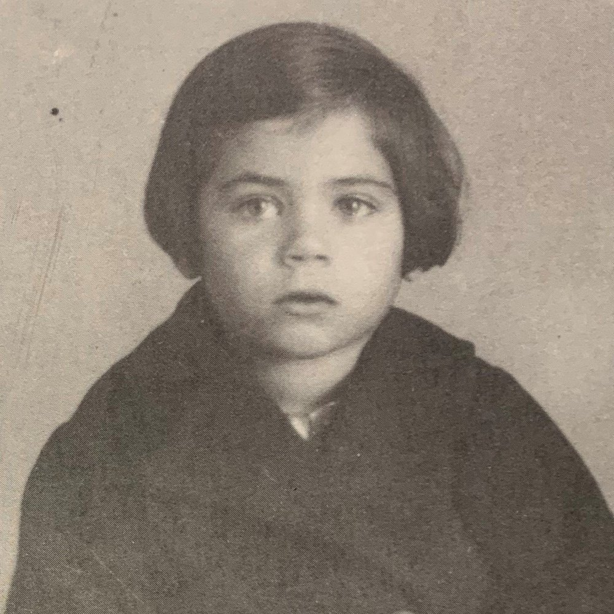

Portrait d’archive
Enfants Spiegel
Martha SPIEGEL
Martha SPIEGEL est née le 27/09/1933 à Vienne en Autriche.
Rassemblée à Lyon, elle est déportée à Auschwitz le 13/04/1944 par le convoi n°71. Elle est morte en déportation.
Déportée avec sa sœur ; Fille de Aron (22/05/1909, Pologne) et Rachel (10/06/1907, Pologne) ; réfugiés en France, ils furent déportés à Auschwitz par le convoi n°37 du 25/09/1942. Seul le père avait survécu en 1945.
Dernière adresse connue : non renseignée (Izieu)
Nom : SPIEGEL
Prénom(s) : Martha
Date naissance : 27/09/1933
Âge (ans) : 10
Lieu naissance : Vienne
Pays ou département : Autriche
Lieu rassemblement : Lyon
Dernière adresse : ?
Ville : Izieu (Ain)
Code postal : 01300
N° Convoi : 71
Date déportation : 13/04/1944
Informations diverses : déportée avec sa sœur ; Fille de Aron (22/05/1909, Pologne) et Rachel (10/06/1907, Pologne) ; réfugiés en France, ils furent déportés à Auschwitz par le convoi n°37 du 25/09/1942. Seul le père avait survécu en 1945.
Spiegel (Martha), née le 27 septembre 1933 à Vienne (Autriche), décédée le 18 avril 1944 à Auschwitz (Pologne). JO
Lieu de déportation : Auschwitz
Lieu de départ : Drancy
Nombre total de déporté·e·s du convoi : 1500
Gazé·e·s à l'arrivée : 1265 (84,3 %)
Survivant·e·s en 1945 : 128 (8,5 %)
Senta SPIEGEL
Senta SPIEGEL est née le 30/03/1935 à Vienne en Autriche.
Rassemblée à Lyon, elle est déportée à Auschwitz le 13/04/1944 par le convoi n°71. Elle est morte en déportation.
Déportée avec sa sœur ; Fille de Aron (22/05/1909, Pologne) et Rachel (10/06/1907, Pologne) ; réfugiés en France, ils furent déportés à Auschwitz par le convoi n°37 du 25/09/1942. Seul le père avait survécu en 1945.
Dernière adresse connue : non renseignée (Izieu)
Nom : SPIEGEL
Prénom(s) : Senta
Date naissance : 30/03/1935
Âge (ans) : 9
Lieu naissance : Vienne
Pays ou département : Autriche
Lieu rassemblement : Lyon
Dernière adresse : ?
Ville : Izieu (Ain)
Code postal : 01300
N° Convoi : 71
Date déportation : 13/04/1944
Informations diverses : déportée avec sa sœur ; Fille de Aron et Rachel; réfugiés en France, ils furent déportés à Auschwitz par le convoi n°37 du 25/09/1942. Seul le père avait survécu en 1945.
Spiegel (Senta), née le 30 mars 1935 à Vienne (Autriche), décédée le 18 avril 1944 à Auschwitz (Pologne). JO
Lieu de déportation : Auschwitz
Lieu de départ : Drancy
Nombre total de déporté·e·s du convoi : 1500
Gazé·e·s à l'arrivée : 1265 (84,3 %)
Survivant·e·s en 1945 : 128 (8,5 %)